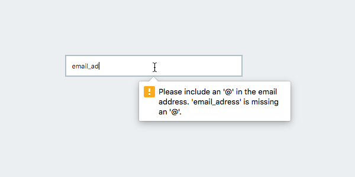
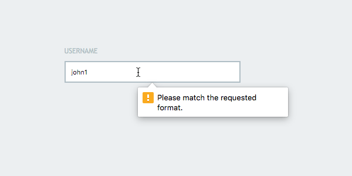
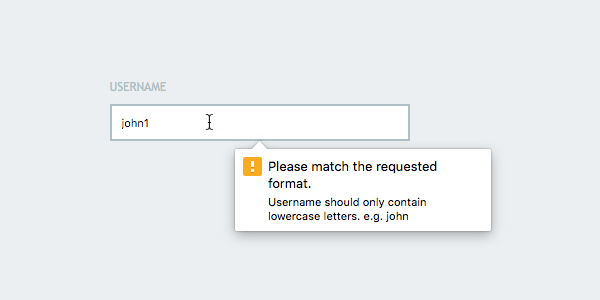

下面这份指南将会探索HTML5的‘pattern’属性，这个属性可以帮助我们定制我们自己的表单验证。
验证(Validation)
表单校验在网站的安全性方面启到的作用与网站的实用性是同等重要的。表单校验工作原理是在提交表单之前，评估输入的内容格式是否正确。例如，如果我们有一个邮箱地址框，那填入的信息必须是有效的邮箱地址；它应该是以字母或数字开头，随后是‘@’字符，并以一个域名地址结尾。
HTML5自带的一些新的文本类型极其预先定义好的一些校验规则，例如email、url及tel等，让表单校验变的更加简单。当输入的值与期望输入的格式不匹配时，输入框会抛出一个错误信息来阻止提交。

预估每一种可能的输入是不切实际的，比如，如果我们需要一个用户名、邮编、或者其他任何格式的特殊输入，我们该怎么办，怎么去校验这些输入呢？这就到了我们今天的主题，’pattern’属性登场的时候了。
使用’Pattern’属性
‘pattern’属性只对’input’元素有效。我们可以使用正则表达式定义我们自己的校验规则。同样的，如果输入值不满足条件，输入框会抛出一个异常。
例如，加入我们的表格中有一个用户名输入框，因为我们没有针对用户名的校验标准，因此，我们需要使用正则表达式来校验我们的输入内容。1
2
3<form action="somefile.php">
<input type="text" name="username" placeholder="Username">
</form>
下面我们使用’pattern’属性来定义一个规则。假使，我们指定用户名只能由小写字母组成，不允许输入大写字母、数组或者其他特殊字符。另外，用户名的长度不该超过15个字符。
用正则来表示的话，规则是’[a-z]{1,15}’。
在我们的用户名输入框中的pattern属性中添加上述值：1
2
3<form action="somefile.php">
<input type="text" name="username" placeholder="Username" pattern="[a-z]{1,15}">
</form>
好了，现在它只支持输入小写字母，提交任何其他值都会抛出一个错误信息。

就像上面你看到的那样，错误信息是“请按规则输入(Please match the requested format)”。这表示我们的校验生效了，但是，这样的错误信息不利于我们理解我们实际上希望输入怎样的格式。
这样的用户体验很失败。
定制校验信息(Customizing the Validation Message)
幸运的是，我们有很多种方式去可以定制更加有用的信息。最直观的方式就是在input元素的’title’属性上添加。1
2
3
4
5
6
7
8<form action="somefile.php">
<input
type="text"
name="username"
placeholder="Username"
pattern="[a-z]{1,15}"
title="Username should only contain lowercase letters. e.g. john">
</form>
现在，标题中包含了默认的提示信息：

然而，这个信息提示框还是前后不一致。如果我们拿它与一个邮箱格式的输入框相比，实际的说明应该更突出一点。
第二种方案可以帮助我们解决这个问题。
替换默认的校验信息(Replacing the Default Validation Message)
让我们用一个完全自定义的信息来替换默认的“请按规则输入(Please match the requested format)”。我们需要用到一点JavaScript的。
开始之前，为了更好的选中input元素，我们先给它加上id。1
2
3
4
5
6
7
8<form action="somefile.php">
<input
type="text"
name="username"
placeholder="Username"
pattern="[a-z]{1,15}"
id="username">
</form>
现在，我们可以用JavaScript选中元素，并赋值给一个变量。(可以直接使用